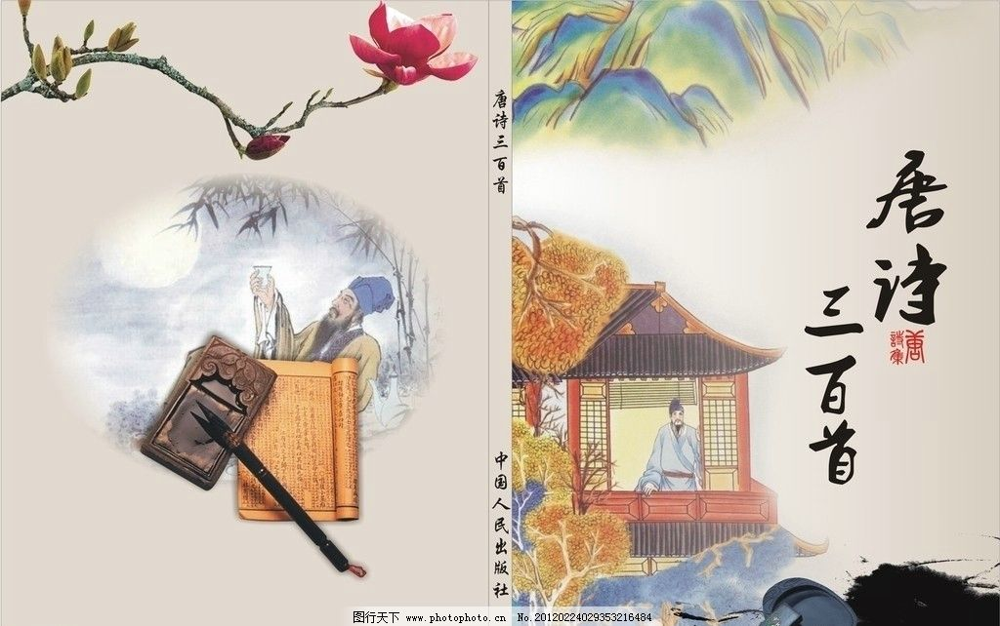

《唐诗三百首》共选入唐代诗人77位，其中五言古诗33首，乐府46首，七言古诗28首，七言律诗50首，五言绝句29首，七言绝句51首，诸诗配有注释和评点。 五言古诗简称五古，是唐代诗坛较为流行的体裁。唐人五古笔力豪纵，气象万千，直接用于叙事、抒情、议论、写景，使其功能得到了空前的发挥，其代表作家李白、杜甫、王维、孟浩然、韦应物等。 七言古诗简称七古，起源于战国时期，甚至更早。
公认最早的、最完整的七古是曹丕的《燕歌行》。南北朝时期，鲍照致力于七古创作，将之衍变成一种充满活力的诗体。唐代七古显示出大唐宏放的气象，手法多样，深沉开阔，代表诗人有李白、杜甫、韩愈。 五言律诗简称五律，是律诗的一种。五律源于五言古体，风格峻整，音律雄浑，含蓄深厚，成为唐人应制、应试以及日常生活中普遍采用的诗歌题材。唐代五律名家数不胜数，以王昌龄、王维、孟浩然、李白、杜甫、刘长卿成就为大。 七言律诗简称七律，是近体诗的一种，格律要求与五律相同。七律源于七言古体，在初唐时期渐成规模，至杜甫臻至炉火纯青。有唐一代，七律圣手有王维、杜甫、李商隐、杜牧、罗隐等，风华绝代，辉映古今。 五七言绝句简称五绝和七绝，都是古典诗体中绝句的一种。五绝起源于汉，七绝起源于六朝，两者都在齐梁时期成型，初唐阶段成熟。唐代绝句气象高远，率真自然，达到了吟诵自由化的最高峰，名家有李白、王维、王昌龄、韦应物、杜牧、刘禹锡等人。